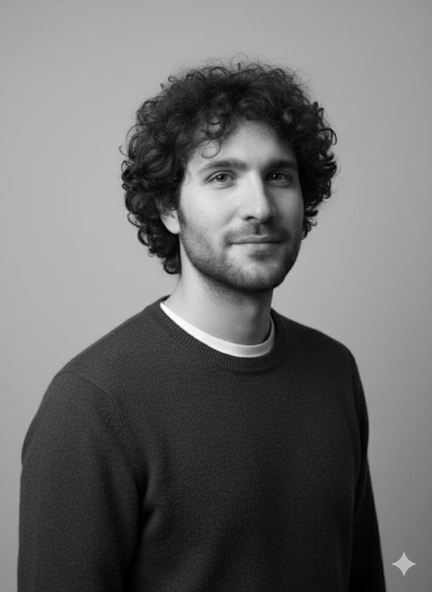

Artificialy
Lugano, Switzerland
Computer Vision and Software Engineer
02.2026 - ongoing
- Forbo - DeepStream.
- Platform - GitLab, Docker, uv, FastAPI, Traefik, and Keycloak.
- Microphones VAD and STT metrics.

Computer Vision & Software Engineer
Experienced computer vision and software engineer. Passionate about precision, simplicity, and well-structured solutions. Eager to contribute to a technical and creative team to develop cutting-edge products.
Experience
Lugano, Switzerland
02.2026 - ongoing
Mendrisio, Switzerland
12.2024 - 01.2026
06.2023 - 12.2024
Lugano, Switzerland
Funds by Innosuisse & SNSF
09.2020 - 10.2022
09.2020 - 10.2022
03.2019 - 10.2019
Lugano, Switzerland
2014 - 2016
Selected work
Distributed real-time anomaly detection deployment with complete inference under tight latency constraints.
Image preprocessing pipeline supporting printed, laser-etched, heavily damaged, and low-contrast 1D/2D codes.
Physics-based rendering system for synthetic imagery, used to test and reason about production vision behavior before hardware availability.
Personal projects
EtherCAT utility for HIWIN motion-controller connection and low-level axis-independent position-control movements.
JNI integrations for libquirc and libwechat-zxing-cpp to expose high-performance C/C++ QR and Datamatrix decoding to Java systems.
TensorFlow-based neural-network prototyping framework that scaled from toy examples to more complex deep-learning architectures.
Hand detection and gesture classification system for controlling networked devices and settings.
Research
My research work focused on spatiotemporal data processing with graph representations and graph neural networks, including day-ahead photovoltaic energy prediction and rainfall-runoff flood likelihood modeling.
Education
GPU and ARM architecture fundamentals, CUDA, OpenACC, and Kokkos.
Double degree program at Università della Svizzera italiana and Università degli Studi di Milano-Bicocca.
Thesis: Speaker-independent lipreading with neural networks exploiting motion dynamics.
Università degli Studi di Milano-Bicocca.
Thesis: CareLine, iterative design and development of an iOS app guided by a usability study.
Stack
OpenCV, Torch, ONNX Runtime, FAISS, ImgAug, TensorRT, YOLO, UNet, ResNet, Siamese networks.
Python, Java, C, C++, gRPC, FastAPI, Docker, GitLab, Traefik.
Phase-shift profilometry, NeRFs, Open3D, RNNs, Transformers, temporal and graph convolutional networks.
PyQt, Qt Designer, Matplotlib, Bokeh, Plotly, CMake, vcpkg, shell workflows.
Readable systems, measurable behavior, clear ownership, and minimal accidental complexity.
Native Italian, fluent English with IELTS certificate, A2/B1 German.
Contact